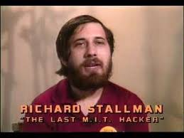

Education
Harvard University and MIT

As a first-year student at Harvard University in fall 1970, Stallman was known for his strong performance in Math 55. He was happy: "For the first time in my life, I felt I had found a home at Harvard." In 1971, near the end of his first year at Harvard, he became a programmer at the MIT Artificial Intelligence Laboratory, and became a regular in the hacker community, where he was usually known by his initials, RMS (which was the name of his computer accounts). Stallman graduated from Harvard magna cum laude earning a bachelor's degree in Physics in 1974. Stallman considered staying on at Harvard, but instead he decided to enroll as a graduate student at MIT. He ended his pursuit of a doctorate in physics after one year, in order to focus on his programming at the MIT AI Laboratory.
While working (starting in 1975) as a research assistant at MIT under Gerry Sussman, Stallman published a paper (with Sussman) in 1977 on an AI truth maintenance system, called dependency-directed backtracking. This paper was an early work on the problem of intelligent backtracking in constraint satisfaction problems. As of 2009, the technique Stallman and Sussman introduced is still the most general and powerful form of intelligent backtracking. The technique of constraint recording, wherein partial results of a search are recorded for later reuse, was also introduced in this paper.

As a hacker in MIT's AI laboratory, Stallman worked on software projects such as TECO, Emacs for ITS, and the Lisp machine operating system (the CONS of 1974–1976 and the CADR of 1977–1979—this latter unit was commercialized by Symbolics and LMI starting around 1980). He would become an ardent critic of restricted computer access in the lab, which at that time was funded primarily by the Defense Advanced Research Projects Agency. When MIT's Laboratory for Computer Science (LCS) installed a password control system in 1977, Stallman found a way to decrypt the passwords and sent users messages containing their decoded password, with a suggestion to change it to the empty string (that is, no password) instead, to re-enable anonymous access to the systems. Around 20% of the users followed his advice at the time, although passwords ultimately prevailed. Stallman boasted of the success of his campaign for many years afterward.